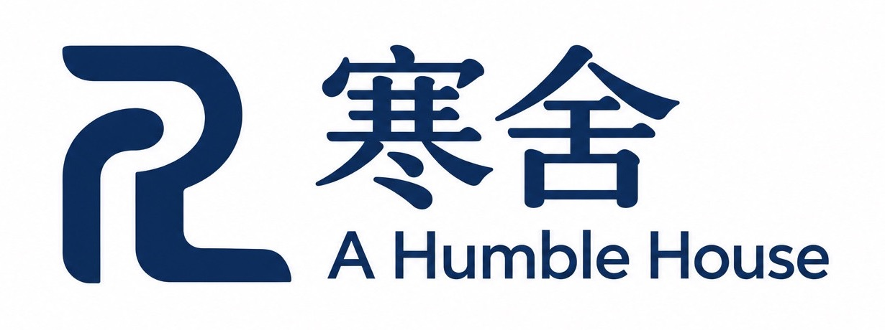

一座城市的繁榮，
如何走進每個人的生活？
從工資、消費到產業結構，把抽象的問題還給具體的一群人。先問：我們用甚麼衡量繁榮，又忽略了甚麼？
展開選題摘要
先從澳門勞動分配切入，釐清經濟總量、居民收入與生活感受之間的差別。完整文章將列出數據年份、來源與限制，區分事實、推論和個人觀點。

林宇滔 Ron ,Lam U Tou
自媒體 lamutou.com
把所知分享，把所見說清。
目前未有已確認發布的新文章。以下卡片為清楚標示的選題草稿，只展示內容方向。
從工資、消費到產業結構，把抽象的問題還給具體的一群人。先問：我們用甚麼衡量繁榮，又忽略了甚麼？
先從澳門勞動分配切入，釐清經濟總量、居民收入與生活感受之間的差別。完整文章將列出數據年份、來源與限制，區分事實、推論和個人觀點。
從步行、候車與街道尺度，看不同人的日常。
以一段實際路程為起點，觀察長者、家長及上班族如何使用同一條街道。
城市記憶應回到人的生活，而不只停在懷舊。
歷史資料與居民口述互相核對，討論保育與生活需要如何相處。
關於公共工作、媒體經驗與人生下一步。
以個人反思為主，不代替其他人的想法；記錄工作方式的轉變與仍然相信的原則。
數據尚未匯入；本草稿不展示未核實圖表。
對話以外，聽見人的處境。
節目資料待匯入完整節目、文字摘要與相關資料。
與聲音版對應的節目影像；獨立影片另列於下方。
知識、時事與生活觀察。
此處保留原影片來源入口（另開分頁）；具體影片分類與清單待整理。
文章匯入時保留全文、原刊登圖片、標題、報章或專欄來源及作者。優先顯示原刊日期；只有交稿日期時會明確標示。所有內容須經擁有人確認發布。
0 篇已發布文章
尚未匯入已確認發布的典藏文章。
曾任記者及主持、澳門立法會議員，現從事顧問與培訓工作。